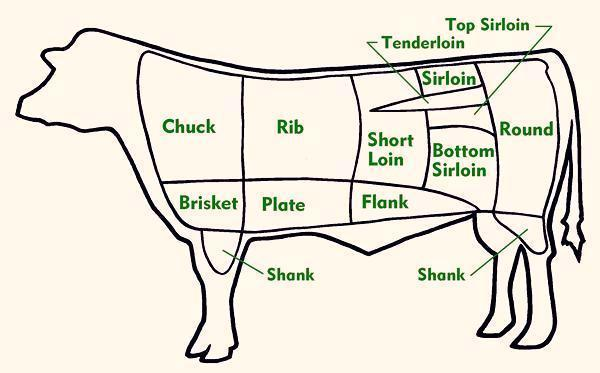
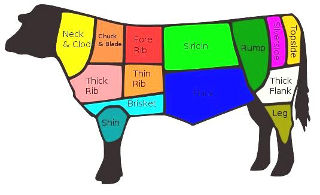
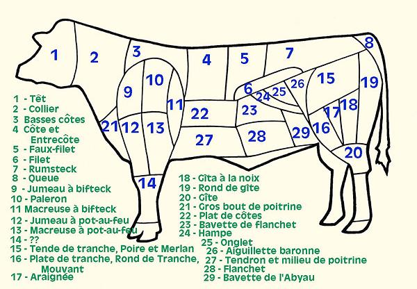
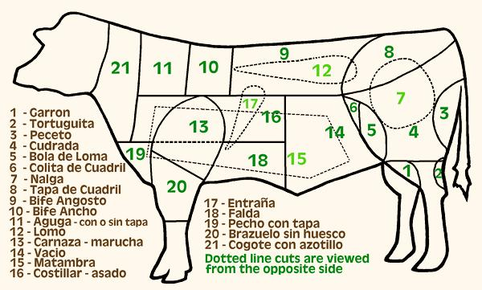

Cuts of Beef: Charts

North Americans Beef Cuts
(except Canadians call "Round" "Hip")
Diagram © cg1.

English Beef Cuts
Diagram by Gamekeeper contributed to the
public domain.

French Beef Cuts (Coupes de Boeuf) - French names
Diagram © cg1.

Argentine Beef Cuts - Spanish names
Tipico corete Argentino de la carne vacuna
Diagram © cg1.
ab_cowcc 090920 r 171002 - www.clovegarden.com
©Andrew Grygus - agryg@aaxnet.com - Linking to and
non-commercial use of this page is permitted.